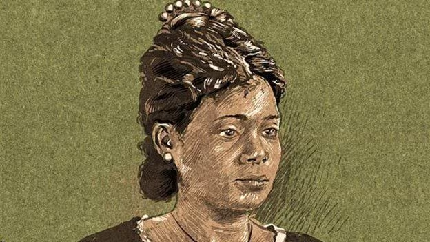
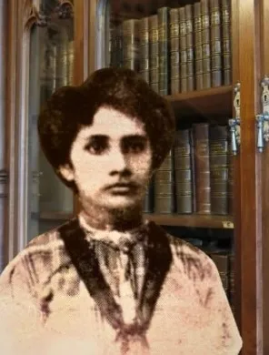
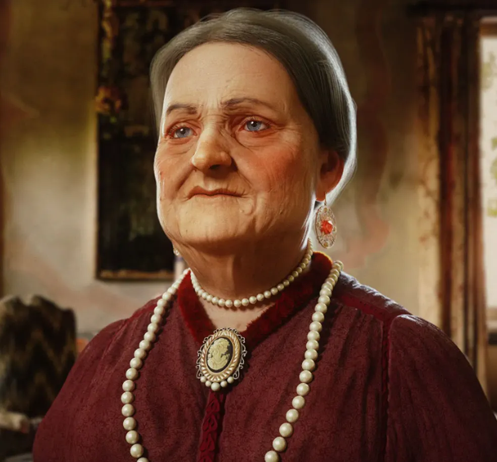

Maria Firmina dos Reis
1822 - 1917
Escritora, professora e pioneira da literatura afro-brasileira, reconhecida por sua contribuição à cultura maranhense e à luta abolicionista.
Ver MaisUm museu virtual dedicado às histórias inspiradoras de mulheres que transformaram nossa cultura, política e sociedade
Descubra as trajetórias de personalidades notáveis que deixaram legados profundos na história maranhense
O Maranhão é um estado rico em história e cultura, berço de talentos notáveis que contribuíram significativamente para o desenvolvimento brasileiro. Este museu virtual apresenta as trajetórias de mulheres extraordinárias que marcaram presença em diversos campos: política, artes, educação, medicina, ativismo social e muito mais.
Cada mulher aqui retratada quebrou barreiras, enfrentou desafios de seu tempo e deixou um legado que continua inspirando novas gerações. Suas histórias, fotografias e contextos históricos estão preservados neste espaço digital como um tributo à sua coragem e determinação.
Navegue pelas galerias, conheça as personalidades em detalhes, explore a linha do tempo dos acontecimentos históricos e compreenda melhor o papel fundamental dessas mulheres na formação da identidade maranhense.

Escritora, professora e pioneira da literatura afro-brasileira, reconhecida por sua contribuição à cultura maranhense e à luta abolicionista.
Ver Mais
Mulher maranhense cuja atuação contribuiu para a história, a cultura e o desenvolvimento do Maranhão, deixando uma marca em seu tempo.
Ver Mais
Figura marcante da história de São Luís, Ana Jansen se destacou por sua presença na vida social e econômica do Maranhão.
Ver MaisPreservar, celebrar e divulgar as histórias de mulheres notáveis do Maranhão, tornando-as acessíveis para educação, inspiração e memória coletiva.
Ser uma referência digital sobre mulheres maranhenses, contribuindo para o reconhecimento de suas trajetórias e o fortalecimento da identidade cultural do estado.